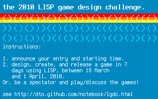

The 2010 Lisp Game Design Challenge
Official mascot: Say hello to Biclops!
Challenge Instructions:
- announce your entry and starting time on the Challenge's cliki page.
- design, create, and release a game in 7 days using any dialect of LISP, between 18 March and 1 April, 2010. (Choose your start time, and release your completed entry within 7 days.)
Or, be a spectator and play/discuss the games!
Join our mailing list and/or IRC channel, irc.freenode.net#lispgames to get involved.
Banner logo:

Previous entries: